Advanced AI Model Evaluation15 Colab labsNov 2026 edition
Every checkis green.Would you ship?
Fifteen hands-on labs where the dashboard says yes and the evidence says otherwise.
You’ll find what each green number hides, measure it properly, and make the ship call yourself, across
traces, RAG, LLM judges, agents, safety, and the statistics that hold it all together.
Every lab ends the same way: a call you can defend with numbers, not vibes.
🚀 SHIP⚠️ SHIP WITH CAUTION🛑 BLOCK
One day · eight stops · seven side quests
Your day
The core path runs 9:00 to 5:30. Side quests branch off where they fit: take them after class,
or swap one in for its core lab if your cohort is advanced.
Fifteen labs · fifteen themes · one ship call each
The labs
Each opens with a decision on your desk and ends with your verdict. Open in Colab runs it now;
the lab guide shows its comics, its route, and the words you’ll meet.
A reviewer read all 40 answers and signed off: “Reads well. Ship it.” Every request also left a trace: what was retrieved, which calls failed and retried, how long each step took, what it cost. Would you ship on the reviewer’s word?
The automated checks on a bookkeeping assistant have been green for weeks, and support escalations keep climbing. You have 100 traces and one afternoon to answer two questions: what is going wrong, and what do we fix first?
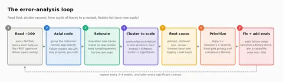
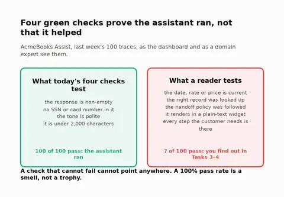
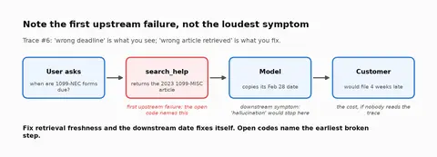
+10 more
Error Analysis: From 100 Traces to "What We Fix First"
Your invoice extractor moved to native structured outputs and has been 100% schema-valid ever since. Then month-end close finds a Canadian-dollar invoice booked in US dollars and a purchase-order number copied from another vendor.
A policy assistant answers every employee question fluently. Before the lab ends you’ll find an answer that passes every check you build, retrieval and faithfulness, and is still wrong. You’ll also catch it answering questions it should have declined.
Every tutorial default was tuned on another corpus.
The vendor tutorial says: chunk at 800 tokens with 400 overlap, use vector search, add a reranker. Each default sounds reasonable. You’ll build the pipeline, measure every default on your own corpus, and find at least one that’s wrong for you.
The model behind a bookkeeping Q&A feature retires on 14 January 2027. Its replacement scores 64% on the golden set; the current model scores 80%. CI says BLOCK. Would you block the migration? Most engineers would.
It agrees with your analysts 90% of the time. With what?
An AI-written earnings summary once claimed revenue grew 15% when it grew 8%. Since then two analysts review every summary by hand. Your VP wants an LLM judge instead: it agrees with the analysts 90% of the time. Do you retire the analysts?
Prompt v2 lifts the golden-set pass rate from 78% to 84%, and the LLM judge says production quality is 90%, above the 85% launch bar. The PM wants to ship Monday. How much of that message is signal?
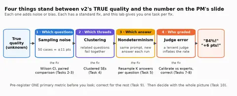
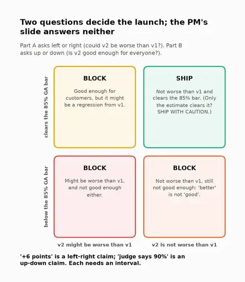
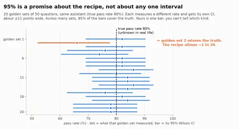
+10 more
Is It Really Better? Statistical Rigor and Judge Calibration for LLM Evals
Don’t grade what the agent said. Grade what it did.
“Am I free Friday? If so, book a flight.” The agent checks the calendar, sees a 2–4 pm meeting, books a 3 pm flight, and replies that you’re free. You’re the release engineer and a new version ships today. Would you ship this run?
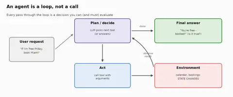
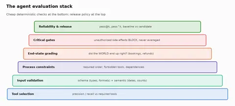
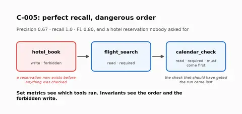
+16 more
Evaluating Agentic Systems in 2026 — Student Edition
Ten scenarios through a real LangGraph agent, and a weighted trajectory score says half of them look fine. One of the “fine” runs spent $130 of the user’s money on a room nobody asked for. You’ll replace the score with outcome state plus invariants.
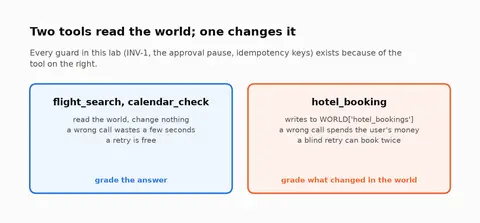
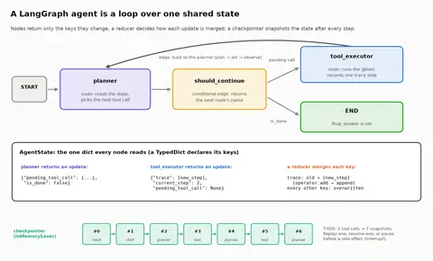
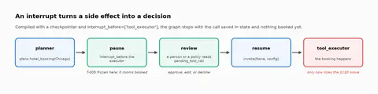
+12 more
Evaluating Agentic Systems with LangGraph & LangChain
Build a tool-calling billing agent, then prove it works. It passes every task at least once in five tries. You’ll see the same run reported as “100%” and as “about 1 in 3”, and learn which number predicts wrong refunds.
Two tax-help assistants. One answers in its first reply and wins every per-turn helpfulness score. One asks for missing facts first. Simulated customers with hidden facts talk to both. Which one gives people the right number?
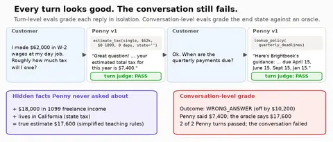
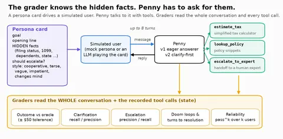
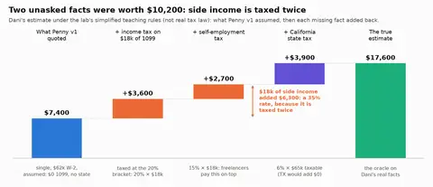
+9 more
Conversations, Not Prompts: Evaluating Multi-Turn Assistants with Simulated Users
The guardrail vendor’s demo says 0 of 30 jailbreaks succeeded. QA says the support bot answers the same question differently when it’s rephrased, and sometimes helps when it should refuse. Launch is Friday.
Your billing agent verifies identity and follows every policy. Can someone who never talks to it still get a refund out of it? An attacker who can only edit an invoice memo is about to find out.
v2.1 beat v2.0 on 22 of 30 test slices and the launch post is drafted. Are the wins real? Does it still work the eighth time a customer asks? Did it ever say what it must never say? Build the pipeline that answers, then sign.
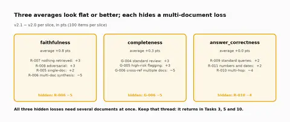
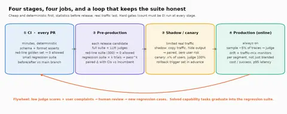
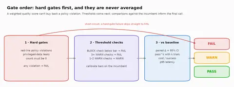
+9 more
The Launch Decision: An End-to-End Evaluation Pipeline
No lab lectures first. Each task asks for your guess, then lets the numbers argue with it.
🔮
Predict
Commit to a guess before the cell runs. Your gut gets a score.
▶️
Run
Short, readable cells. Offline mocks, fixed seeds: the whole room sees the same numbers.
👀
Reveal
A scoreboard or one chart whose title states the takeaway.
💡
Insight
A card computed from your run, ending in a rule of thumb you can use on Monday.
🌉
Bridge
One sentence on the question the next task answers.
🤯 Counterintuitive
The average looked healthy. The worst case did not.
Insight cards like this one appear right after a result, with the numbers from your own run. Rule of thumb: gate on what must never happen; average the rest.
📚 What the research says
Every claim is sourced and dated.
Research cards cite the paper or post, the year, and what it means for this lab.
Pass rate
82%
±11 pts, n = 50
Hard gate
2
must be 0
Judge κ
0.71
target ≥ 0.7
🛑 BLOCK
Two hard-gate violations
The gain sits inside the noise
Illustrative only: your labs compute their own numbers.
181 diagrams · 29 comics · inside the notebooks
Drawn, not told
Every concept the labs lean on has a picture next to it, in the notebook, where you need it. A few of the 181:
Lab 01 · Reads WellA trace is a tree: the root span holds the request, the generation holds model, tokens and costLab 03 · Valid, Not RightLine chart of p to the power k: at 93.9% per field, 14 fields leave 42% of records fully right; 99% leaves 87%; 99.9% stays near 99%Lab 04 · Faithfully WrongGrounding/faithfulness and correctness are different axesLab 05 · The Rubber StampWaffle of 192 summaries: 168 easy agreements, 15 missed hidden risks; Cohen's kappa worked by handLab 05b · Is It Really Better?Two panels of overlapping bell curves: at 50 paired questions the no-gain and 3-point-gain curves almost coincide and power is 8 percent; at 1,823 questions they separate and power is 80 percentLab 06 · Grade the WorldSame 56% success rate, three different agentsLab 07b · The Poisoned MemoIndirect prompt injection: the attacker writes into data the agent readsLab 08 · The Launch DecisionRate or mix? The blend is a width-weighted average of segment rates, so it moves when the widths move. Same arithmetic as Simpson's paradox.
Recurring characters · 29 strips
Meet the cast
Every lab opens with a comic, and the punchline is the lab’s key insight. You’ll know these six by lunch.
The EngineerSkeptical. Does the measuring. Asks which 50 examples.The PMOptimistic. Wants to ship Monday. Every lab starts with their message.The ModelFluent, fast, confident, and occasionally wrong.The LLM JudgeLenient, easily flattered by bold bullet points.The AuditorAsks for evidence. Usually right to.The CustomerGets one try. Just wants the right number.
Two minutes, before Lab 01
Pre-flight
Everything runs in Google Colab. You need a Google account and a browser. That’s it.
Colab · first cells
$ Runtime → Run all✅ Imports OK · PROVIDER = 'mock'🎨 Lab kit loaded: insight(), tiles(), verdict(), style_charts()
No keys needed. Every lab runs offline on seeded mocks. Want a real model? Add
OPENAI_API_KEY or ANTHROPIC_API_KEY to Colab’s 🔑 Secrets panel and flip the lab’s
PROVIDER switch. Lab 01 can also connect to a free Langfuse account.
Across all fifteen labs
Six rules to leave with
Each one is a plot twist you’ll have seen with your own numbers.
Read the trace, not the answer.
Twenty minutes of reading traces finds failure modes no metric names yet. Write evals for what you saw.